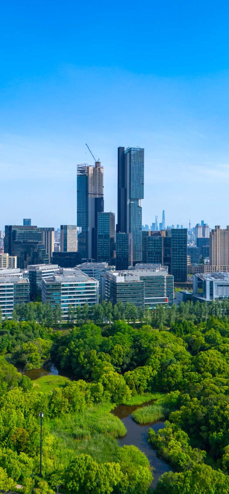
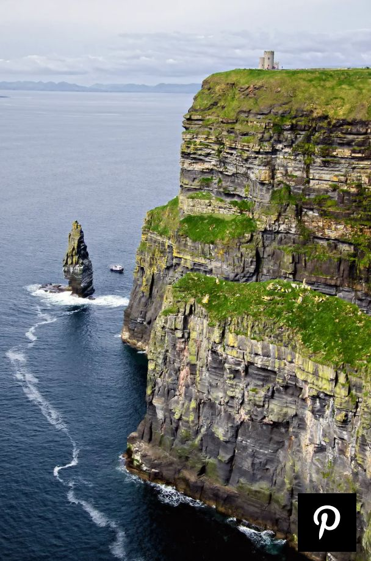

TOUR PACKAGES
- V.VIP CLASS
- VIP CLASS
- NORNAL CLASS
- ORDINARY CLASS
1. V.VIP CLASS
This kind of class or tour package is more fucussed on tourists from abroard or foreign countries like USA, CANADA,ITALY, CHINA, among others who have interest in exploting different countries all over the world using RANADE TOURS AND TRAVEL. These tourist are connected to us using online websites of different kinds from which we can simply link them to the various branches that we spread all over different area of the world in order to increase the frequency of our service offered to them especially tour lovers, nature and touring world wide.
Under this kind of tour package we offer accomodation free in global class improved hotels like serena, crane hotel, among others depending on the country into which we are to curry out our touring in.
This package enables the tourist to travel to four kinds of sites in different countries unless other wise. When the tourist descides to extend the tour period to many months but normally wo consider one month where we spend a ful week in every site to be visited selected by the tourist before travelling to the tour sites so that we can exaust every thing in that site and area as well. There we offer free meals, accompaned with a beautiful and healthy babe or a handsome and strong gentle man to the tourist for some company while enjoying the tour respectively if at all the tourist filled the form as single under the marital status.
NOTE: THIS IS ONLY DONE WHEN THE TOURIS IS WILLING AND HAS ACCEPTED.
Still under this cartegory we always have night camp fires every night while at the site but on friday it is done in a different way where we always have goat roasting at every tourist site that we visit. To add on, every tourist is given a Body Guard to tighten the security however much the company it self has private security guards or peersonels.This class oways or can cost the tourist a few charge by the company that shall be used to cater for the better seervuces to be offered to him or her and this is as low as $ 3,000 US dollars. 
2. VIP CLASS
This kind of class or tour package is more just like V. VIP but a bit different. It is also fucussed on tourists from abroard or foreign countries like USA, CANADA,ITALY, CHINA, among others who have interest in exploting different countries all over the world using RANADE TOURS AND TRAVEL. These tourist are connected to us using online websites of different kinds from which we can simply link them to the various branches that we spread all over different area of the world in order to increase the frequency of our service offered to them especially tour lovers, nature and touring world wide.
Under this kind of tour package we offer accomodation free in global class improved hotels like serena, crane hotel, among others depending on the country into which we are to curry out our touring in.
This package enables the tourist to travel to three kinds of sites in different countries unless other wise. When the tourist descides to extend the tour period to many weeks but normally we consider three weeks, where we spend a ful week in every site to be visited selected by the tourist before travelling to the tour sites so that we can exaust every thing in that site and area as well. There we offer free meals, accompaned with a beautiful and healthy babe or a handsome and strong gentle man to the tourist for some company while enjoying the tour respectively if at all the tourist filled the form as single under the marital status.
NOTE: THIS IS ONLY DONE WHEN THE TOURIS IS WILLING AND HAS ACCEPTED.
Still under this cartegory we always have night camp fires every night while at the site but on friday it is done in a different way where we always have goat roasting at every tourist site that we visit. To add on, every tourist is given a Body Guard to tighten the security however much the company it self has private security guards or peersonels.This class oways or can cost the tourist a few charge by the company that shall be used to cater for the better servuces to be offered to him or her and this is as low as $ 2,800 US dollars.

.jpg)
3. NORMAL CLASS
This kind of class or tour package is more just like VIP but a bit different only that for it is fucussed on tourists from countries near the main branch in UGANDA foreign countries like KENYA, LYBIA,SOUTH SUDAN, ACTUALLY AFRICAN COUNTRIES But still a person can be from African countries and he or she books for a V.VIP, or a VIP tour so it depends to what the touris may want according to the interesthe has in touring, travelling, adventure, discovery, leisure and exploting different countries all over the world. RANADE TOURS AND TRAVEL can ofeer all such kins of services to its clients. These tourist are connected to us using online websites of different kinds from which we can simply link them to the various branches that we spread all over different area of the world in order to increase the frequency of our service offered to them especially tour lovers, nature and touring world wide.
Under this kind of tour package we offer accomodation free in global class improved hotels like serena, crane hotel, among others depending on the country into which we are to curry out our touring in.
This package enables the tourist to travel to two or more like three kinds of sites in different countries unless other wise. When the tourist descides to extend the tour period to many weeks but normally we consider two weeks, where we spend a ful week in every site to be visited selected by the tourist before travelling to the tour sites so that we can exaust every thing in that site and area as well. There we offer free meals, accompaned with a beautiful and healthy babe or a handsome and strong gentle man to the tourist for some company while enjoying the tour respectively if at all the tourist filled the form as single under the marital status.
NOTE: THIS IS ONLY DONE WHEN THE TOURIS IS WILLING AND HAS ACCEPTED AND EVERY THING CONCERINING IS AT THE TOURIST'S EXPENDITURE NOT THE COMPANY.
Still under this cartegory we always have night camp fires every night while at the site but on friday it is done in a different way where we always have goat roasting at every tourist site that we visit. To add on, every tourist is given a Body Guard to tighten the security however much the company it self has private security guards or peersonels.This class oways or can cost the tourist a few charge by the company that shall be used to cater for the better servuces to be offered to him or her and this is as low as $ 2,650 US dollars. 
4. ORDINARY CLASS
This focusses mostly on students and university students travelling to differnt countries or with in their own country to study or corry out field work study as a piece of academic in a subject known as Geography as required by the government sector concerning education.
So in this aspect RANADE TOURS AND TRAVEL comes in to foster accademics on such a beautiful way or manner. Under this package we can only offer a single week stay tour since they are students. Here these students can be able to tour a three or foiur touris sites depending on the country they cose as thier intrest place in the application form. accomodation is done through the use caming tents of hiring a hotel where they can be baseing off from to go for thier study tours depending to the addministrators descission and amoiunt aggreed uppon with the manage of the company in that specific country.
As RANADE TOURS AND TRAVEL We are much willing to offer security, meals, tour guides and transport to and from the tour sites.
This Package can charge the institution a chrge which is as low as $ 2500 dollars, $ 2700 dollars, or more depending on the country and how parted or far the tourist sites are located naturally.
This class is some times concidered the most Expensive class because it involves a number people or students.